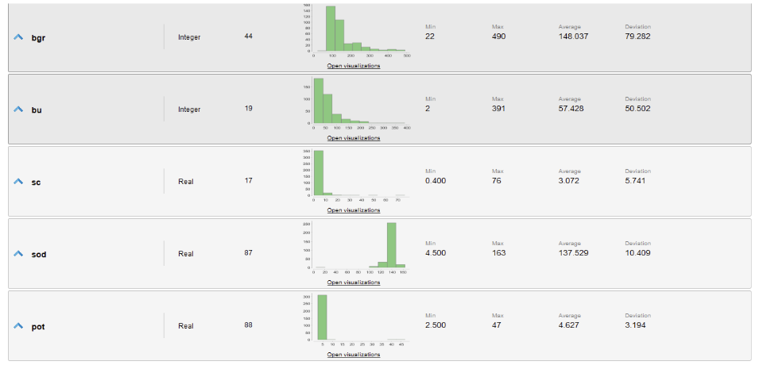

The Chronic Kidney Disease (CKD) dataset is a well-known dataset used in the field of data science and machine learning. It consists of medical data related to chronic kidney disease, and its primary purpose is to predict whether a patient has CKD based on various attributes and features.
INTRODUCTION
Chronic kidney diseases involve loss of the body's kidney functions. This has very negative consequences on the body, and can become fatal without proper treatment. The problem with these diseases is that in the early stages the symptoms are not very noticeable or specific. In addition, the diagnosis of this type of disease is usually invasive, costly and even risky, which is why patients do not visit a doctor in these cases, especially in low-income countries.
Early detection of this type of disease would be beneficial to individuals on both the health and economic sides. The treatment of chronic renal failure is usually more expensive than coronary artery bypass surgery. Therefore, it is extremely important to be able to predict whether or not these will occur. Some diseases that can cause kidney failure are diabetes, hypertension, swelling in the face, loss of appetite, anemia, urinary discomfort, among others.
The aim is to solve a binary classification problem from the dataset provided, where the objective variable is whether the person will have kidney failure in the future. As the dataset provides these values for the dataset examples, it is a case of supervised learning.

DATA
The dataset typically includes the following information:
Patient Information:
Symptoms and Tests:
Medical History and Comorbidities:
Target Variable: Class: The target variable indicating the presence (ckd) or absence (notckd) of chronic kidney disease.

DATA ANALYSIS
The target variable of the problem is the class variable with attributes cdk and notcdk. It is a binary variable. The predictors of the dataset refer to whether the person has some diseases such as diabetes or hypertension and anemia, we have the age of the person and various medical data such as blood pressure, potassium, hemoglobin, sodium, among others.
Disease attributes are binary nominal attributes that specify whether or not the person has the disease, specified as yes or no. Appetite is specified as good or poor. Appetite is specified as good or poor. Others, such as pcc, say present or notpresent, just as pc indicates whether the level is normal or abnormal. The attributes sg, al and su are nominal with values specified in the dataset information. The rest of the attributes are numeric.
Below are the ranges, means, variances and distributions of all the data in the dataset. It is observed that the dataset is not balanced, it has 250 cases of cdk and 150 examples of notcdk, where there are missing values that must be managed. In total we have 400 examples in the dataset.
It is observed how the data distributions, for the most part, are skewed to the right or left. This in some cases can be accommodated with some transformation to avoid skewing the data. It is also noted that in potassium and sodium we have examples that appear to be outliers because they are excessively far from the majority of the data. These should be removed from the dataset so that they do not influence the predictions. Bias is also observed in the binary attributes.

PREPARING THE DATA
Before performing any transformations, we can appreciate that there are attributes with missing values. Attributes "rbcc" and "rcb" have more than 30% of missing data. Therefore, I eliminated them. For the rest of the numerical attributes with missing values, the average values of the distributions are imputed. Then, I filter outliers from the distributions. I decided to proceed in this order given the fact that the number of examples is considerably larger than the number of outliers, so they do not affect the imputed value in a considerable way. The distributions with outliers are bp, sc, pot and wbcc. In order to get rid of this outliers some filters were applied, which are the following:
CONCLUSIONS
Naive Bayes gave the best accuracy results of them three, with a 100% of correct predictions. Nevertheless, all three algorithms gave over 98% in prediction accuracy, so all presented models would have been a good choice here. The only thing to do now is to start predicting new data when needed.